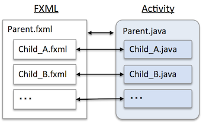

Creamyではユーザアクションを処理する、あるいは、UIの表示要素を変更するオブジェクトをActivityと呼んでいます。
Webと比較して、Activityは何にあたるでしょうか？そう、JavaScriptです。 Webとの比較を簡単にまとめると以下となります。
| Creamy | View = FXML + CSS + Acitivty |
| Web | View = HTML + CSS + JavaScript |
ただし、「Activity = JavaScript」ではありません。違いがあります。
イベントをハンドリングする、表示要素を変更する、リクエストの送信/ハンドリングをする という意味では同じですが構成が異なります。
以下のように、FXMLが階層構造となっている場合、Activityも同じ構造となります。
ActivityはJavaFXで呼ぶ「Controller」と同一です。Creamyでは用語の統一のため「Activity」と呼んでいます。
(ActivityはJavaFXのControllerを拡張したものです。)
したがって、ActivityからFXMLに記述されたNodeを参照することができますし、FXML内にActivity内のメソッドをハンドラとして記述することができます。以下に例を示します。
Sample.vm.fxml
<?xml version="1.0" encoding="UTF-8"?>
<?import java.lang.*?>
<?import java.net.*?>
<?import java.util.*?>
<?import javafx.scene.control.*?>
<?import javafx.scene.layout.*?>
<?import javafx.scene.paint.*?>
<?import javafx.scene.text.*?>
<AnchorPane xmlns:fx="http://javafx.com/fxml" fx:controller="Sample"
<children>
<Button fx:id="button" onAction="#buttonHandler" />
<TextField fx:id="textField" />
</children>
</AnchorPane>
Sample.java
public class Sample extends Activity {
@FXML private Button button;
@FXML private TextField textField;
@FXML public void buttonHandler(ActionEvent evnent) {
textField.setText("Hogehoge");
}
}